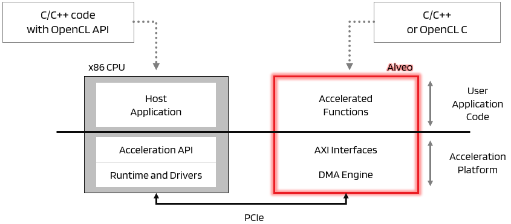

Vitis™ ハードウェア アクセラレーション チュートリアルxilinx.com の Vitis™ 開発環境を参照 |
セクション 1 - ワークフロー¶
このセクションでは、Vitis フローの概要とホスト/カーネルの実例を簡単に説明します。
Vitis フロー¶
ハードウェア アクセラレーションを有効にするため、コードはホストと 1 つまたは複数のカーネルに分割されます。C/C++ で記述されたホスト プログラムは、OpenCL などの API 抽象化を使用して、ホスト プロセッサ (エンベデッド プラットフォームの場合は x86 サーバーまたは Arm プロセッサ) 上で動作します。ハードウェア アクセラレーション カーネルは、ザイリンクス デバイスのプログラマブル ロジック上で動作します。
ザイリンクス ランタイム (XRT) で処理される API 呼び出しは、ホスト プログラムとハードウェア アクセラレータ (カーネル) の間のトランザクションを処理します。制御およびデータの転送を含むホストとカーネルの間の通信には、PCIe® バスまたはエンベデッド プラットフォームの AXI バスを使用します。
典型的なアプリケーションでは、まずホストがカーネルで実行されるデータをホスト メモリからグローバル メモリに転送します。その後カーネルがデータを処理し、結果をグローバル メモリに格納します。カーネルが処理を終了すると、ホストが結果をホスト メモリに戻します。ホストとグローバル メモリ間のデータ転送によりレイテンシが発生し、アクセラレーション全体に悪影響を及ぼすことがあります。実際のシステムでアクセラレーションを達成するには、ハードウェア アクセラレーション カーネルで達成される利点がこれらのデータ転送のレイテンシを上回る必要があります。
Vitis™ コア開発をフローを使用すると、ホスト アプリケーションとハードウェア アクセラレーションされたカーネルを管理、コンフィギュレーション、ビルド、実行しやすくなります。
ホスト アプリケーションは OpenCL™ API 呼び出しを使用して C/C++ で開発されます。
ハードウェア カーネルは C/C++、OpenCL C、または RTL で開発できます。
Alveo アクセラレーション カードに接続された x86 サーバーに関連する機能ブロックの図を次に示します。

次のセクションでは、チュートリアルを実行するための環境を準備する方法を学びます。
Copyright© 2020 Xilinx